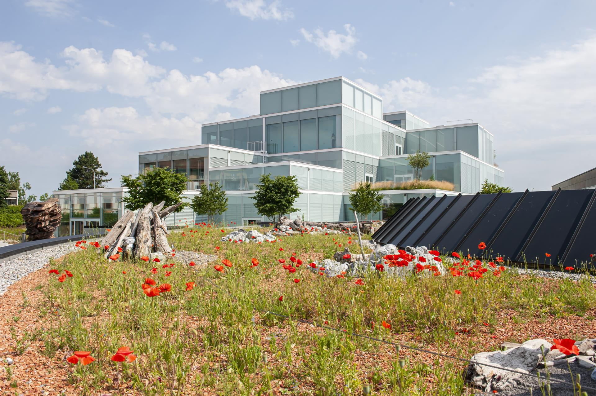
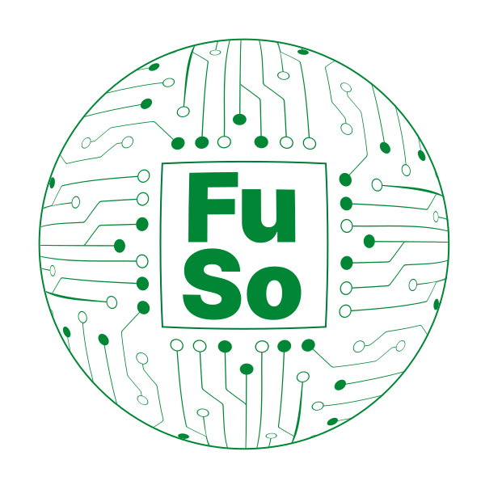

The 5th Solid Symposium St.Gallen, &
Mon 10 May Solid Open Day on Digital Sovereignty — open to the publicSolid Symposium 2027
The Solid Symposium is the annual meeting of the Solid community — the researchers, developers and practitioners building on Solid, the specification developed in the W3C Solid Community Group that keeps a person's data in a Pod they control, separate from the applications that read and write it. By letting people, organisations and public institutions choose where their data lives and who may use it, Solid turns digital sovereignty from a policy goal into working infrastructure. SoSy 27 is the fifth edition: a public Solid Open Day on digital sovereignty on 10 May 2027, followed by the two-day symposium on 11 and 12 May at SQUARE on the University of St.Gallen campus.
- Open day Open to the public
- Symposium &
- VenueSQUARE, University of St.Gallen, Switzerland
Three days in St.Gallen
The symposium runs on 11 and 12 May, preceded by the Solid Open Day on 10 May — a public programme on digital sovereignty and the part Solid plays in it.
- Mon 10 MayOpen to the public
Solid Open Day: Digital Sovereignty
A public day at SQUARE on who controls our data — and how Solid puts that control back with people, organisations and public institutions. No background in the specification needed.
- Student hackathon: building for digital sovereignty with Solid
- Public evening event on digital sovereignty, in German
- Onboarding session: your first Solid Pod — your data, under your control
- Tue 11 May
Solid Symposium Day One
- Keynote
- Peer-reviewed papers, two parallel tracks
- Poster and demo lightning talks
- Workshops and tutorials
- Hackathon pitches and award
- Evening event
- Wed 12 May
Solid Symposium Day Two
- Keynote
- Peer-reviewed papers, two parallel tracks
- Workshops and tutorials
- Closing, awards and handover to the next edition
Key dates
- Sep 2026Call for workshop proposals Opening soon
- Autumn 2026Call for contributions — papers, posters and demos
- Feb 2027Submission deadline
- Mar 2027Notifications to authors
- Mar 2027Registration opens
- 10–12 May 2027Solid Symposium 2027
Dates beyond the first call are indicative and will be fixed when each call is published. Planning a workshop or an affiliated event? We would like to hear about it before the call goes out — write to fuso@unisg.ch, or subscribe below to be told the moment the call opens.
Thank you to our sponsors
SoSy 27 is made possible by the organisations that support it. Interested in joining them? Write to fuso@unisg.ch.
Frequently asked questions
What is the Solid Symposium 2027?
The Solid Symposium 2027 (SoSy 27) is the fifth edition of the annual Solid community conference. It runs from 10 to 12 May 2027 at the University of St.Gallen in Switzerland and combines peer-reviewed papers, workshops and tutorials, posters and demos, a student hackathon and a public open day on digital sovereignty.
When and where does SoSy 27 take place?
The Solid Open Day is on Monday 10 May 2027; the symposium itself runs on Tuesday 11 and Wednesday 12 May 2027. The venue is SQUARE on the University of St.Gallen campus, Guisanstrasse 20, 9010 St.Gallen, Switzerland.
What is Solid?
Solid is a specification developed in the W3C Solid Community Group and initiated by Sir Tim Berners-Lee. It keeps a person's data in a personal online datastore — a Pod — that they control, and lets applications read and write that data with their permission instead of each application holding its own copy.
How does Solid relate to digital sovereignty?
Digital sovereignty is the ability of people, organisations and public institutions to decide for themselves over their data and the digital infrastructure they depend on. Solid supports it by separating data from applications: data lives in a Pod its owner chooses — self-hosted, at their institution or with a provider they trust — and the owner grants and revokes each application's access through open W3C standards. Changing an application or a Pod provider therefore does not mean losing the data or being locked in.
Is any part of the symposium open to the public?
Yes. The Solid Open Day on 10 May 2027 is open to the public and is dedicated to digital sovereignty. It includes a student hackathon on building sovereign applications with Solid, an onboarding session for creating your first Solid Pod, and a public evening event on digital sovereignty held in German.
How can I submit a paper, poster or demo?
The call for contributions opens in autumn 2026. The submission deadline is in February 2027 and authors are notified in March 2027. Subscribe to the newsletter to be told when the call is published — the exact dates are fixed when the call goes out.
How do I propose a workshop or an affiliated event?
The call for workshop proposals opens in September 2026. If you are planning a workshop or an affiliated event, the organisers would like to hear about it before the call goes out — write to fuso@unisg.ch.
When does registration open?
Registration is expected to open in March 2027. Dates beyond the first call are indicative and are fixed as each call is published.
Where were the previous Solid Symposia held?
The Solid Symposium has been held annually since 2023: SoSy 23, SoSy 24, SoSy 25 and SoSy 26. SoSy 27 in St.Gallen is the fifth edition.
How do I keep up with announcements?
Subscribe to the newsletter. You can sign up with an existing Solid Pod, create a Pod hosted on University of St.Gallen infrastructure as part of signing up, or simply leave an email address.
How can my organisation sponsor SoSy 27?
Write to fuso@unisg.ch to discuss sponsoring the Solid Symposium 2027.
Newsletter
Pick how you want to sign up for the newsletter. Either way, it will also be delivered to you by email.
Solid Pods created here are hosted on University of St.Gallen
infrastructure (wiser-solid-xi.interactions.ics.unisg.ch). Plain email signups are
handled by Formspree.
11 May 2027
Local time · St.Gallen, CH
Future Society Hub (FuSo)Cross-disciplinary research hub fusing computer science and law, University of St.Gallen Institute of Computer Science (ICS-HSG)Research institute for computer science at the University of St.Gallen Institute for Law and Economics (ILE-HSG)Research institute for law and economics at the University of St.Gallen